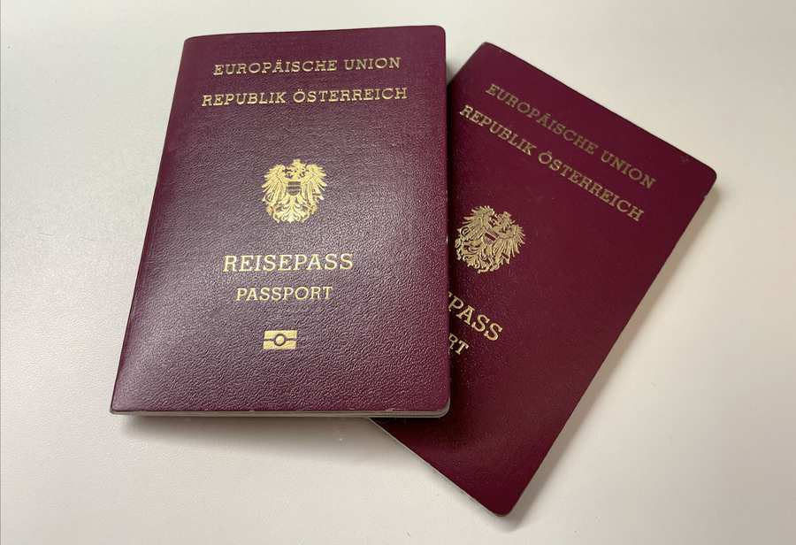

ב-1 בספטמבר 2020, נכנסו לתוקף התיקונים לחוק האזרחות, שדרשה הקהילה היהודית של וינה במשך יותר מ-20 שנה. לכן אנו שמחים להודיע לך על הנקודות החשובות ביותר לקבלת האזרחות האוסטרית.
לסיכום, כל מי שנרדפו בעצמם על ידי הנאצים ו/או הם צאצאים בקו ישיר לאבות נרדפים (בן, בת, נכד, נכדה, נין, נינה ועוד) זכאים להגיש בקשה לאזרחות. המועד האחרון לתקופת הזכאות הוארך עד ה-15 במאי 1955. צאצאים ישירים של קורבנות רדיפות הנאצים שנותרו אזרחים של מדינות המלוכה האוסטרוהונגרית לשעבר, זכאים כעת גם לתבוע את האזרחות האוסטרית בתנאי שמקום מגוריהם העיקרי היה בשטח הרפובליקה של אוסטריה לפני הרפובליקה הנאצית.
אילו שלבים נחוצים:
תחילת ההליך בהתאם לסעיף 58ג פסקה. 1a של חוק האזרחות האוסטרית היא מה שנקרא הצהרה ("Anzeige") שאתה יכול למלא ולהגיש בנציגות הדיפלומטית האוסטרית המקומית שלך (שגרירות אוסטריה או הקונסוליה הכללית) המוקדם מה-1 בספטמבר 2020.
- אנשים המתגוררים בחו"ל, אנא פנו לרשות הנציגה האוסטרית המוסמכת שלכם (שגרירות אוסטריה או הקונסוליה הכללית) (ראה: https://www.bmeia.gv.at/en/embassies-consulates/search-for-austrian-representations/). יש לך אפשרות למלא שאלון מקוון מראש ישירות באתר (ראה להלן).
- אנשים תושבי וינה צריכים לפנות למשרד ממשלת המחוז של וינה (מחלקה עירונית 35 – הגירה ואזרחות – MA 35 (1200 Wien, Dresdner Strasse 89, דוא"ל: 80-ref@ma35.wien.gv.at, פקס: +43 1 4000 9935110). ראה https://www.wien.gv.at/english/administration/civilstatus/citizenship/citizenship-ns-victims.html.
- אם אתה גר במחוז אחר של אוסטריה, אנא פנה למשרד האחראי של ממשלת המחוז. ראה https://www.help.gv.at/Portal.Node/hlpd/public/behoerdenbundeslaender.
דרכי הגשה ונוהל הבקשה:
- שימו לב שאינכם זקוקים לעורך דין או לייעוץ משפטי מיוחד כדי לרכוש אזרחות אוסטרית.
- כצעד ראשון, אנא מלא את השאלון המקוון שפותח על ידי משרד החוץ וה-MA 35 בדף הבית של הנציגות הדיפלומטית האוסטרית המקומית שלך (שגרירות אוסטריה או הקונסוליה הכללית). השאלון והמידע הנוסף צריכים להיות זמינים בגרמנית, אנגלית, ספרדית ובחלקו בעברית (ראה https://www.bmeia.gv.at/en/embassies-consulates/search-for-austrian-representations/).
- אנא קרא בעיון את השאלות הנפוצות - שאלות נפוצות.
- לאחר מילוי השאלון המקוון תקבל הודעה עם הערכים שלך ורשימת כל המסמכים הדרושים לך להוכחת זהותך ו/או הקשר שלך עם האב הקדמון הנרדף.
- בעת מילוי השאלון חשוב למלא את השמות, התאריכים ומקומות הלידה המדויקים וכן פרטים נוספים של האבות הישירים שלך המאפשרים לרשויות האוסטריות לאתר את זהותו בפנקסים ובארכיונים האוסטריים.
- בשלב נוסף הנציגות הדיפלומטית האוסטרית (שגרירות אוסטריה או הקונסוליה הכללית) תיצור איתך קשר כדי לייעץ לך כיצד להגיש את ההצהרה ולדון איתך בהליכים הנוספים.
- אם אתה צריך אימות דיפלומטי או אפוסטיל עבור המסמכים האישיים שלך, אנא פנה לרשות המוסמכת במדינת הולדתך שהנפיקה את המסמך.
- לבקשת הרשות יש להגיש מסמכים שאינם גרמנית או אנגלית עם תרגום לגרמנית על ידי מתרגם מושבע בבית המשפט או מוסמך.
- אם יש לך עותקים של מסמכים מקוריים מאבותיך, נא להגיש גם אותם.
- הנציגות הדיפלומטית האוסטרית (שגרירות אוסטריה או הקונסוליה הכללית) תעביר את הצהרתך ("Anzeige") יחד עם כל המסמכים שהוגשו לרשות המוסמכת באוסטריה. לאחר מכן ההליך מתחיל.
- אם שמות, תאריכי לידה או כתובות מגורים של אבותיך אינם ידועים, הרשות המוסמכת באוסטריה תחקור את המסמכים והמידע הדרושים על אבותיך הישירים בארכיונים שונים ככל שניתן.
- רכישת אזרחות אוסטרית לא אמורה להוביל לאובדן האזרחות הקודמת שלך ברוב המדינות. לקבלת מידע משפטי מחייב, אנא פנה לרשות האזרחות של מדינת הולדתך.
- ממשלת המחוז המוסמכת באוסטריה מחליטה על ההצהרה שלך ("אנזייה"). אם משהו לא ברור, ממשלת המחוז האחראית תיצור איתך קשר ישירות.
- ברגע שממשלת המחוז המוסמכת תאשר את הצהרתך, היא תוציא החלטה רשמית ("בשייד"). החלטה רשמית זו תימסר אליך דרך הנציגות הדיפלומטית האוסטרית (שגרירות אוסטריה או הקונסוליה הכללית). עם מסירת ההחלטה, אתה אזרח אוסטרי.
- הענקת אזרחות אוסטרית אינה כרוכה בתשלום. כל עלויות אחרות עבור שירותים הניתנים על ידי הרשויות במדינת הולדתך או עבור תרגום ואימותים דיפלומטיים יישארו.
הפוך לחבר בקהילה היהודית של וינה:
אם אתם מתכננים להתיישב באוסטריה לאחר קבלת האזרחות האוסטרית, אנו מזמינים אתכם לפנות אלינו. אנו תמיד שמחים לקבל בברכה חברים חדשים בקהילה. מידע הנוגע לחברות ניתן למצוא באתר האינטרנט שלנו www.ikg-wien.at.